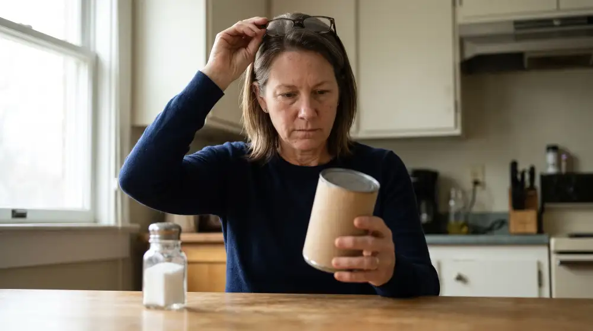
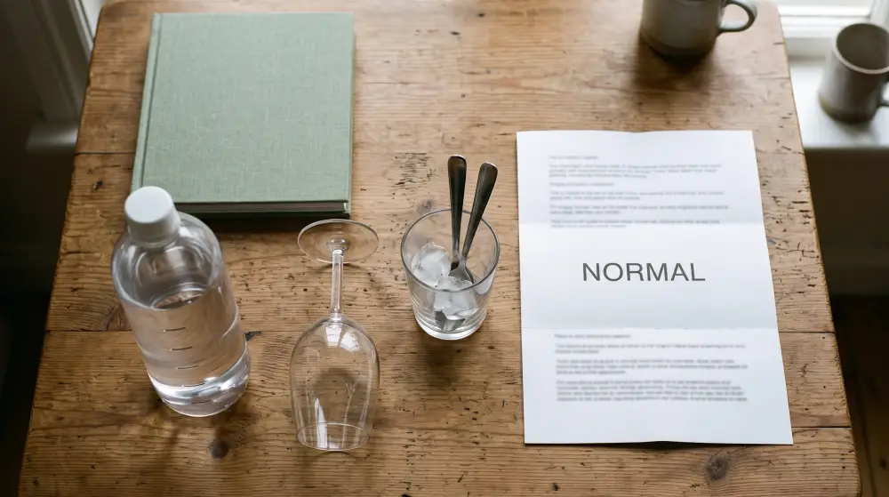
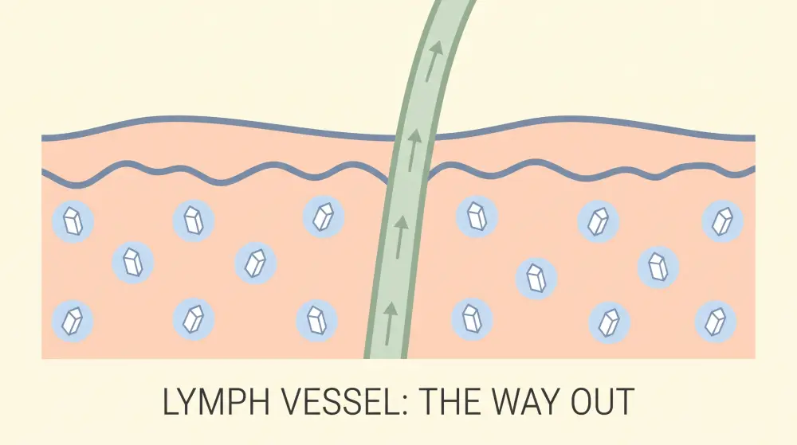
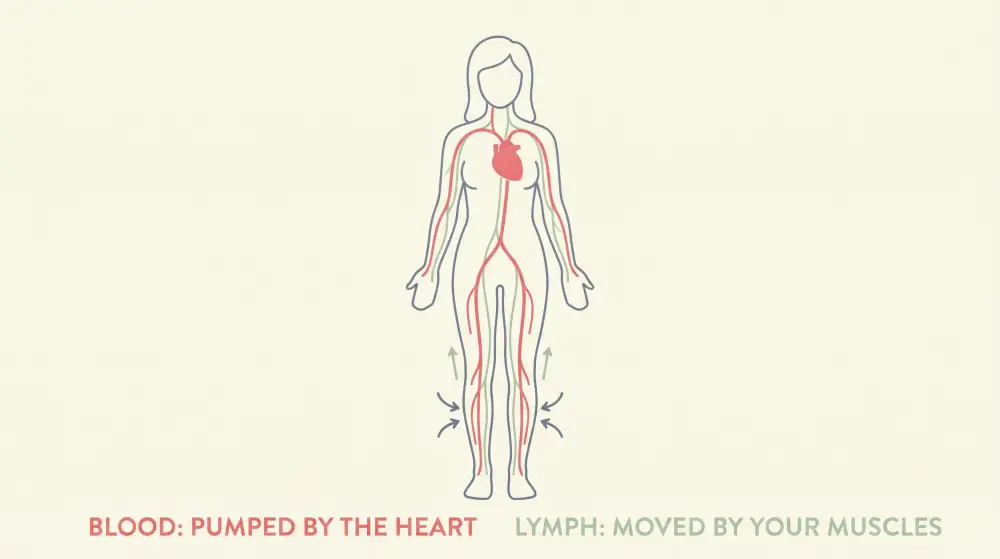
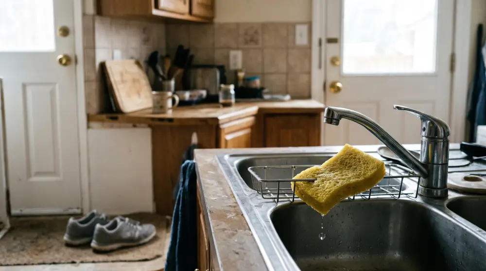

Three months ago, a woman of about fifty did the sensible thing.
She cut out salt from her food. The chips went. The deli meat went. She started reading the back of every can and every jar, and she put back anything with a sodium number that made her wince.
She did it because of the face in the mirror at seven in the morning. The full cheeks, the heavy eyelids, the jaw that had gone soft overnight. Everyone had told her the same thing: too much salt makes a person hold water. Cut the salt.
So she cut the salt.
And three months later, the face in the mirror at seven is exactly the same face. The rings still slide on at breakfast and stick by six. The sock lines are still there at bedtime.
She followed the advice, the advice was right, and it still didn’t work. That is the part nobody explained to her, and it’s the part this article is about.
Everything Sensible She Tried Only Changed What Went In

Most women who wake up puffy go through the same list, and this woman went through all of it.
After the salt came the water. Two liters a day, because everyone said dehydration makes the body hang on to fluid. By the third week her face was puffier at seven, not less. She couldn’t understand it, so she drank more.
Then the evening glass of wine went. Then the spoons in the freezer and the caffeine eye cream, which bought her an hour before the morning meeting.
Then the doctor. Blood work, the full panel of tests. Everything came back normal. The doctor said not to worry about it, and she believed him, and she still took her rings off at six.
Here’s what nobody said in that appointment.
Every one of those fixes works on what goes in today, or on the surface of the skin. None of them touches the salt that’s already stored, or how it gets carried out. To see why that matters, it helps to know where the body actually keeps its salt.
Women describe the same handful of signs:
- A puffy face or heavy eyelids on waking that eases off by midday
- Rings that slide on at breakfast and stick by evening
- Shoes a size tighter after a day at a desk, in the car or on a plane
- Sock lines still printed around the ankles at bedtime
- Puffiness that used to be occasional and now shows up most mornings
- All of it carrying on after cutting salt, drinking more water and a clean set of blood tests
The Body Keeps Its Salt Under the Skin, With Water Wrapped Around It

For a long time, doctors assumed the salt a person eats either stays in the blood or passes out of the body within a day or so. Blood tests measure the salt in the blood, that figure is usually normal, and so the subject was closed.
Then researchers started using a special kind of MRI scan that can see sodium inside living tissue. They scanned the lower legs of 113 healthy people aged 22 to 90.
The skin was full of salt. Far more than the blood, and far more than anyone had expected.
Two things stood out. The older the person, the more salt their skin was holding. And in skin, unlike muscle, the extra salt came with extra water packed around it.
Think of a sponge sitting under a dripping faucet.
Turning the faucet off is the right thing to do. It stops the sponge getting any wetter. But it doesn’t wring the sponge out. The water that’s already in it stays until something moves it.
That’s what cutting salt does. Less salt in stops the pile growing. Cutting back does nothing about the pile that’s already there, or the water sitting around it, in the soft tissue of the face, around the eyes and in the ankles.
It also explains the water bottle. Water follows salt. If the skin is holding salt, the extra glass before bed has somewhere to go, and in the morning she finds out where.
The Only Way Out Runs Through Vessels With No Pump of Their Own

So how does salt that’s parked in the skin ever leave?
It leaves the way everything in the tissue leaves. Every day, a few liters of fluid seep out of the blood vessels into the tissue around them, and a second network of vessels collects it and carries it back. That network is the lymphatic system.
Researchers who studied salty skin found something remarkable. When the skin stores salt, the body grows more lymph vessels into that skin to carry it away. The lymphatic system is the road the body builds for this job.
The catch is how that road moves its traffic.
Blood has the heart, which pushes it around the body about a hundred thousand times a day, awake or asleep. Lymph has no pump of its own. It moves when the muscles around it squeeze it, when the chest rises and falls with each breath, and when the vessels themselves give their own small, slow contractions.
When a person moves, lymph moves. When a person sits still, lymph slows. And the salt and water in the skin wait with it.
After 40, the Vessels That Carry It Out Slow Down
Here’s the detail that explains why “occasional” turned into “most mornings”.
The walls of lymph vessels contain muscle, and that muscle does part of the pumping. With age, the muscle in the vessel walls thins out, and the contractions get weaker, less frequent and less regular. Researchers who study how the lymphatic system ages describe older vessels as fewer, with fewer connections between them, and slower to move what they carry.
Nothing about this woman’s life changed in her forties. Same breakfast, same desk, same walk with the dog. The vessels that clear her face and ankles simply contract less often and less hard than they used to. The same dinner leaves more behind, because less of it gets carried away by morning.
A second change arrives in the same decade. For most of her life, a woman’s monthly cycle helps her body let go of salt and water. In her forties that cycle winds down, and many women find they hold more water than they used to. Two things change at once: more fluid to move, and slower vessels to move it.
None of that is anyone’s fault. But it adds up, and left alone it doesn’t tend to reverse.
It shows up as the camera kept off in the morning meeting. The photo she asks to retake after lunch. The salt-free dinners she keeps cooking while wondering whether any of it makes the slightest difference.
Over time, a lot of women decide this is simply what their face does now. The slowdown is real, but it does not have to be the end of the story.
Why the Salt Shaker Was Only Ever Half the Answer

So the low-salt advice was right, as far as it went. Less salt in means less salt stored. That habit is worth keeping.
The missing half is the flow that carries out what’s already stored, and nothing on the sensible list was built for that job.
Movement is. Walking is the best thing there is for lymph, because every step squeezes the vessels in the legs. Getting up from the desk every hour helps. So do slow, deep breaths, and ten minutes with the feet up at the end of the day.
But there’s a limit to what a routine can reach. Nobody walks for the eight hours they’re asleep. Nobody remembers to breathe deeply through a three-hour drive. And none of it does anything for the muscle in the vessel walls, the part that has been slowing down since 40.
That is why we made a daily capsule to go alongside the walking and the low-salt dinners, and support healthy lymphatic flow every day.*